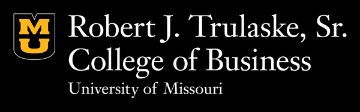
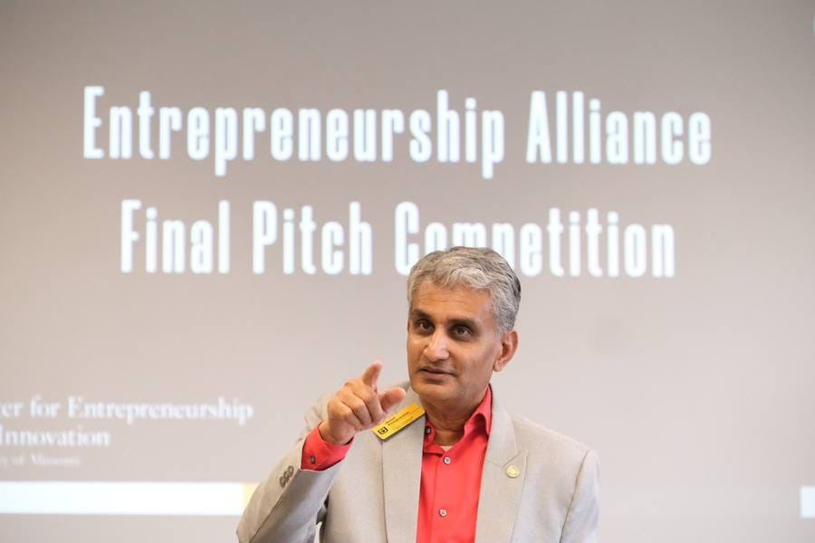

The Entrepreneur's
Guidebook
From idea to IPO — your complete roadmap through the resources, capital, and community at Mizzou and beyond.

Entrepreneurship at Mizzou is not simply an extracurricular activity. It is a discipline taught by experienced entrepreneurs, supported by real capital, and connected to one of the strongest alumni networks in the Midwest. This guidebook will help you find your way through it.
Four phases to build something real
Every founder's path is different, but the underlying structure is consistent. We've organized Mizzou's entrepreneurship resources around the four phases of building a venture — so you can find what you need at the moment you need it.
Some work isn't a phase you finish — it runs across all four. Keep these going from day one:
AODO MedTech wins $7,000
A Trulaske student team turned an idea into investment-ready capital through the Entrepreneurship Alliance pitch competition. This is what Phase 3 looks like in practice.
My founder path
Pick your phase and work the list. Your progress is saved on this device, so you can leave and pick up where you stopped.
Saved in this browser only — nothing is sent anywhere, and clearing your browser data clears your progress.
What's open right now
Grants, competitions, and accelerators you can apply to, sorted by what closes first. Add any deadline to your calendar in one click.
Dates marked unconfirmed are the program's usual cycle, not a published date for this year — always confirm on the program's own site before you plan around it. Deadlines shift, and a missed one is expensive. Spot something out of date? Tell us and we'll fix it.
How to do the hard things
Ten questions every first-time founder faces. The answers below are distilled from the most authoritative voices in venture — Sequoia Capital, Y Combinator, Paul Graham, Marc Andreessen, and the founders who built Airbnb, Stripe, and Facebook — into a starting point. Follow the links for the full frameworks.
Source: Paul Graham, Do Things That Don't Scale (Y Combinator)
The single most repeated piece of startup advice from Y Combinator: in the beginning, do the unscalable things. Your first customers will not arrive on their own. The principles:
- Recruit users manually, one by one. Nearly all startups have to. You cannot wait for users to come to you; you go out and get them. Stripe famously set up accounts for early users on the spot rather than asking them to try a beta later — what YC calls the Collison installation.
- Deliver an overwhelmingly good experience. With only a handful of customers you can give each one a level of attention that large companies never can. Make your first users so happy they tell others.
- Go to them in person. Airbnb founders flew to New York, knocked on hosts doors, and helped them directly. The direct contact is also a discovery mechanism: you learn what works, where users get confused, and what to build next.
- Start narrow, then widen. Facebook launched at one school, got it hot, then added the next. Contain the fire to get it really hot before adding more logs.
- Treat the unscalable work as the product, not a distraction. Manual recruiting and hands-on support are how you find product-market fit, not a detour from it.
The question to ask is not whether the company is taking over the world today, but how big it could get if the founders did the right things — and the right things often seem laborious and inconsequential at the time.
Read Do Things That Don't Scale →Source: the Sequoia Capital pitch deck framework
Sequoia, an early backer of Apple, Google, Stripe, and Airbnb, recommends a deck of roughly ten slides. The structure is deliberately spare: it is built around the questions an investor asks in the first few minutes. Each slide answers exactly one. The ten slides:
- Company purpose. Define the company in a single declarative sentence.
- Problem. Describe the customer pain. Outline how the customer addresses the issue today.
- Solution. Show your value proposition and why it makes the customer life better. Provide use cases.
- Why now. Establish the historical evolution of your category and the recent trends that make your solution possible.
- Market size. Identify the customer you serve. Calculate TAM, SAM, and SOM.
- Competition. List competitors and your competitive advantages.
- Product. Show the product: form, features, architecture, and roadmap.
- Business model. Explain how you make money: revenue model, pricing, account economics, and sales approach.
- Team. Present the founders and key team members, and the story of why this team wins.
- Financials. Share traction and a simple financial model.
Sequoia notes that what wins is not slide design but clarity of thinking and scope of ambition. Airbnb early deck was plain; the thinking behind it was not.
Read the Sequoia framework →Source: Y Combinator, A Guide to Seed Fundraising, and Paul Graham, How to Raise Money
Y Combinator has funded thousands of startups and codified what early founders need to know. The essentials:
- Build something people want first. The strongest fundraising position is traction. Do not raise before you have evidence the market wants what you are building.
- Know why and how much. Raise enough to reach a meaningful milestone, typically twelve to eighteen months of runway. Avoid raising on a vague plan.
- Use a standard instrument. YC created the SAFE (Simple Agreement for Future Equity) to make early rounds fast and inexpensive. Standard documents reduce legal cost and negotiation friction.
- Get the first commitment. Fundraising has momentum. One credible investor saying yes makes the next yes easier. Pursue the first lead aggressively.
- Treat it as a numbers game. You will hear no many times before yes. Meet many investors in parallel, set a deadline, and do not mistake politeness for commitment.
- Set a deadline and close. Fundraising is a distraction from building. Run it as a concentrated process, then return to the product.
Paul Graham frames the typical path in three phases: tens of thousands from an accelerator or angels, then a few hundred thousand to a few million to build the company, then later rounds to accelerate growth once the company is clearly succeeding.
Read the YC seed guide → Read Paul Graham on raising money →Source: Marc Andreessen, The Only Thing That Matters (2007)
Andreessen — co-creator of the first popular web browser and backer of Facebook, Stripe, and Coinbase — argues that the single thing a startup must achieve is product-market fit: being in a good market with a product that can satisfy it. Everything else is secondary. How to recognize it:
- You can feel its absence. When you do not have it, customers are not getting value, word of mouth is not spreading, usage is not growing, the press is indifferent, and sales cycles drag. If this is your reality, you do not have it yet — no matter how good the product looks.
- You can feel its presence even more clearly. When you have it, customers buy as fast as you can make the product, usage grows as fast as you can add servers, money piles up, and you are hiring sales and support as quickly as you can. Demand pulls the product out of you.
- Market is the dominant force. When a great team meets a lousy market, the market wins. When a lousy team meets a great market, the market wins. Pour your energy into being in a market with real, urgent demand — it forgives many other mistakes.
- Do whatever it takes to get there. Change people, rewrite the product, move to a different market, tell investors and your board to wait. Reaching fit is worth almost any sacrifice, because life before it and after it are entirely different.
- Measure the pull, not vanity metrics. Retention, organic word of mouth, and customers who would be very disappointed without you are truer signals than raw signups or press. The market votes with behavior, not compliments.
Most startups that fail do so because they never reach product-market fit. Before it, focus on nothing else; after it, the job changes entirely.
Read The Only Thing That Matters →Source: Y Combinator (Michael Seibel) and Paul Graham on co-founders
Co-founder conflict is one of the leading causes of startup death — Y Combinator has observed that roughly one in five of its startups loses a founder, and disputes over equity are a frequent trigger. The discipline that prevents it:
- Pick people you know, not résumés. The strongest co-founder relationships come from having worked or studied together. You are choosing someone to be in a high-stress relationship with for years; prior shared experience predicts survival better than skills on paper.
- Optimize for complementary strengths and shared values. You want different abilities (so you cover more ground) but aligned commitment and ethics (so you do not fracture under pressure). Talk explicitly about ambition, work expectations, and what each of you wants from the company.
- Split equity close to equal. Almost all the work is ahead of you, so dividing equity on the basis of who had the idea or who contributed first is a mistake. YC's guidance is to be generous: a meaningfully unequal split signals that you do not value a partner, and that resentment compounds over years.
- Always vest, always with a cliff. Equity should vest over about four years with a one-year cliff, for every founder including the CEO. This protects the company if someone leaves early, and protects each founder from carrying a partner who walks away.
- Decide who is CEO, and write it down. Equal equity does not mean no decision-maker. Name a single CEO to break ties, put the agreement in writing early, and have the hard conversation now rather than during a crisis.
Fairness is not the same as symmetry, but generosity early is cheap insurance. The equity conversation feels awkward at the start and catastrophic if deferred — have it before there is anything to fight over.
Read the YC equity guide →Source: Brian Chesky (Airbnb) on hiring, and standard early-stage practice
Your first ten hires set the culture and ceiling of the company. Airbnb co-founder Brian Chesky, who built a Fortune 500 company from three founders, argues founders should treat early hiring as one of the most important things they personally do — not something to delegate. The principles:
- Hire for the result, not the title. Focus on what a person has actually accomplished and the impact they can have, rather than pedigree or an impressive-sounding résumé. Early-stage work rewards ownership over credentials.
- Hire missionaries, not mercenaries. The best early employees believe in the mission and would take the work even without the upside. People motivated mainly by money or status leave when a better offer or a hard stretch arrives.
- Screen for slope, not just position. A startup changes fast; you need people whose rate of learning is high, who thrive without structure, and who will be more capable in a year than the role requires today.
- The founder stays in the details of hiring. Do not outsource your culture. Founders should interview early hires personally, define the bar, and be willing to wait for the right person rather than fill a seat fast.
- Hire slow, fire fast. A wrong early hire is disproportionately costly because each person is a large fraction of the company. Take time to get it right, and act quickly and humanely when someone clearly is not.
Great leadership in the early days is presence, not absence. The people you bring in first will hire everyone after them — set the bar high enough that you would be proud to work for any of them.
Read YC on early hiring →Source: value-based pricing practice (Patrick Campbell / ProfitWell and others)
Pricing is the single most under-managed lever in most startups, and a change to it flows straight to the bottom line. Founders chronically underprice out of fear. The discipline that experienced operators apply:
- Price on value, not on cost. What it costs you to deliver should set a floor, not the price. Anchor instead to the economic value the customer receives — what your product saves or earns them — and capture a fraction of it.
- Talk to customers about willingness to pay. Pricing is a research problem, not a guess. Ask buyers what they currently spend to solve the problem, what would be too expensive, and what would be so cheap they would doubt the quality. Patterns emerge quickly.
- Pick a value metric that scales with the customer. Charge along the dimension that grows as the customer gets more value — seats, usage, transactions — so your revenue rises with their success rather than capping at a flat fee.
- Start higher than feels comfortable. Underpricing is more common and more dangerous than overpricing: it starves you of margin to reinvest and signals low value. You can almost always discount down; raising prices later is harder.
- Treat price as a living experiment. Revisit it regularly, segment it, and test changes deliberately. Small, disciplined adjustments to pricing often outperform large efforts to win new customers.
A product's price is a statement about its value. If no customer ever pushes back on your price, it is almost certainly too low.
Read on pricing strategy →Source: Eric Ries, The Lean Startup
Eric Ries defines a pivot as a structured course-correction designed to test a new fundamental hypothesis about the product, strategy, or engine of growth. Knowing when to pivot — versus persevere — is one of the hardest judgments a founder makes. The framework:
- Hold a regular pivot-or-persevere meeting. Decide on a cadence and force the question deliberately. Pivots are delayed because founders avoid the conversation, not because the signal is unclear; scheduling it removes the emotion of avoidance.
- Judge by validated learning, not vanity metrics. Rising totals (downloads, registered users) can mask a failing engine. Use cohort analysis and actionable metrics: are new customers behaving better than old ones because of what you changed? If the numbers improve but never enough, that is a pivot signal.
- A pivot is a new hypothesis, not surrender. Keep what you have learned. A pivot might change the customer (same product, new segment), the problem, the business model, or the growth engine — while retaining the validated insights underneath.
- Watch for diminishing returns. When experiments become less productive and the current approach feels less effective over time, the runway you have left is your budget for pivots. Each one needs enough remaining runway to be tested properly.
- Pivot decisively, then commit. A half-pivot is the worst outcome — you keep one foot in the old idea and never give the new hypothesis a fair test. Once you decide, reset the experiments and run hard at the new direction.
The startup's runway is the number of pivots it can still make. Conserve cash not just to survive, but to buy yourself more attempts to find what works.
Read the Lean Startup principles →Source: Paul Graham, Default Alive or Default Dead?
Paul Graham argues that every founder should know, at all times, the answer to one question: if your current growth rate and expenses hold and you raise no more money, do you reach profitability before the money runs out? That is the difference between default alive and default dead. The discipline:
- Know which one you are — today. Most founders cannot answer this off the top of their heads, which is dangerous. Model your revenue growth, expenses, and cash on hand so you always know whether the trajectory reaches profitability before zero.
- Ask the question early. The time to find out you are default dead is while you still have enough runway to do something about it. Discovering it late removes every good option and leaves only desperate ones.
- If default dead, fix growth before raising. Raising more money to cover a broken trajectory only postpones the reckoning. Investors can tell. Get to default alive on your own engine, and you raise from a position of strength rather than need.
- Control the two levers you own. You can grow revenue or cut costs. Hiring is the most common way founders accidentally become default dead — each hire pushes profitability further out, so add people deliberately and only against real growth.
- Default alive buys you freedom. A company that can reach profitability on its own terms can choose whether and when to raise, walk away from bad terms, and survive a funding winter. That optionality is worth more than a higher valuation.
The first thing to do is measure honestly. A founder who knows they are default dead can act; one who assumes the next round will save them often runs out of room to be saved.
Read Default Alive or Default Dead? →Source: Paul Graham, Founder Mode (2024)
As startups grow, founders are told to run them like a manager: hire good people and give them room to do their jobs. Drawing on a talk by Airbnb's Brian Chesky, Paul Graham argues this conventional advice often backfires, and that founders can lead differently. The ideas:
- "Hire good people and leave them alone" can fail. Chesky followed that standard advice at Airbnb and the results were poor; he reversed course by studying how Steve Jobs actually ran Apple. Delegation without engagement can let problems hide behind layers.
- Stay in the details that matter. Founder mode means remaining engaged below the layer of your direct reports — knowing the product, the customers, and the work deeply — rather than managing only through summaries and dashboards.
- Skip-level by design. Founders can legitimately reach past the org chart: company-wide meetings, direct contact with people several levels down, and involvement in key projects. What looks like micromanagement in a manager can be essential context for a founder.
- Guard against being managed by your reports. Well-meaning executives may try to keep you out of the details for the sake of tidy process. Founders who let that happen lose touch with their own company; presence, used well, is not the same as meddling.
- You have permission to run it your way. Much startup advice comes from people who have managed companies but never founded one. A founder's relationship to the company is different, and the way to lead it does not have to copy the professional-manager playbook.
Founder mode is still being mapped, and it is not a license to micromanage — it is permission to stay deeply connected to the company you built as it grows beyond what one person can see at once.
Read Founder Mode →AI is your superpower
A first-time founder in 2026 can do what a funded team did five years ago. AI compresses research, prototyping, drafting, and analysis into hours — letting one person test more ideas, ship faster, and punch far above their headcount. Below: where the technology came from, what is current, what to listen to, and where it is headed.
Source: original research papers, peer-reviewed and openly published
You do not need to read the math to grasp the ideas. A handful of papers explain why the tools you now use every day exist. Knowing the lineage helps you reason about what AI can and cannot do for your venture.
- Attention Is All You Need (Vaswani et al., 2017). Introduced the Transformer architecture that underpins nearly every modern large language model. This is the foundational paper of the current era.
- BERT (Devlin et al., 2018). Showed the power of pre-training deep bidirectional language representations — a key step toward general-purpose language understanding.
- Language Models are Few-Shot Learners (Brown et al., 2020). The GPT-3 paper, which demonstrated that scaling models lets them perform new tasks from just a few examples in the prompt.
- Training language models to follow instructions with human feedback (Ouyang et al., 2022). The InstructGPT paper behind RLHF — the technique that made models genuinely helpful and conversational.
For founders: these papers explain why prompting works the way it does. The "few-shot" insight in particular is the basis for most practical prompt engineering — show the model examples of what you want.
Source: model provider announcements and benchmark trackers, as of June 2026
Last reviewed: June 2026. Model names below age quickly. For the current leaderboard — live rankings on speed, price, and quality across every major provider — see Artificial Analysis.
The frontier moves monthly, so treat any specific model as a snapshot. As of mid-2026, four labs are leapfrogging each other, and the practical takeaway matters more than the leaderboard: capable models are getting cheaper fast, which is pure upside for a bootstrapped founder.
- The current flagships. Anthropic's Claude Opus 4.8, OpenAI's GPT-5.5, Google's Gemini 3.1 Pro, and xAI's Grok 4.3 are the models worth comparing for serious work in 2026. Each lab's news page is the best place to track new releases.
- Models became agents. The defining shift of 2026 is that frontier models stopped being chatbots and started doing multi-step work — operating tools, writing and running code, and completing long tasks with less hand-holding.
- Price is collapsing. Mid-tier models now rival last year's flagships at a fraction of the cost, and open-weight options keep improving. For most startup use cases, you no longer need the most expensive model.
- Compare before you commit. Leaderboards like Artificial Analysis track speed, price, and quality across providers — useful for picking the cheapest-capable model for a given task. And pin your version: providers silently upgrade "latest" endpoints, so build on an explicit version and keep a small test set so a new release doesn't quietly change your output.
For founders: a sensible default is to build provider-agnostic where you can, prototype on whatever model is cheapest-capable for the task, and reserve the premium models for the parts that genuinely need top-tier reasoning or coding.
Source: consensus across 2026 "best AI podcast" roundups
The field moves too fast for textbooks. These shows are consistently rated among the best in 2026 and are chosen here for founder relevance — investment perspective, building, and signal over hype. All are free on Spotify, Apple Podcasts, and YouTube.
- No Priors — hosted by investors Sarah Guo and Elad Gil. The business-and-investment view of AI, with founders and frontier-lab guests. Start here if you are a founder or raising money.
- Latent Space — hosted by swyx and Alessio Fanelli. The trade publication for AI engineers; the most practical show on actually building with agents and infrastructure.
- The AI Daily Brief — Nathaniel Whittemore's short, daily news roundup. The fastest way to stay current without drowning in the firehose.
- Lenny's Podcast — product, growth, and building software. Not AI-only, but increasingly the best source on shipping AI-powered products.
- Training Data — Sequoia Capital's show, with AI builders and researchers; pairs well with the Sequoia frameworks in the How-To section.
Practitioner's tip echoed across the 2026 roundups: pick three to five shows that match your role and commit for a month. Quality beats quantity.
Source: long-form essays and talks by leading AI figures
Beyond the weekly news, a few thinkers try to reason about the next five to ten years. Read them not as prophecy but as a way to think a step ahead of your competitors about how AI reshapes industries — and where the opportunities will be. The first two below were published in 2026.
- "The Adolescence of Technology" — Dario Amodei (Anthropic), January 2026. The ~20,000-word follow-up to Machines of Loving Grace. Where the earlier essay laid out the upside, this one maps five categories of risk from powerful AI and a pragmatic plan to navigate them. Widely cited as one of the most significant AI essays of 2026.
- Balaji Srinivasan — the "verification gap" (2025–2026). The Network State author and former Coinbase CTO argues that because AI is so good at faking things — media, data, even science — verification becomes scarce and valuable. His provocative claim: "AI makes everything fake, and crypto makes it real again," and that this creates large new categories of work in proctoring and verification. A useful contrarian lens for founders hunting for where value accrues.
- "Machines of Loving Grace" — Dario Amodei (Anthropic), 2024. The foundational optimistic case for how powerful AI could transform biology, health, and economic development. The memorable image: "a country of geniuses in a datacenter."
- "The Intelligence Age" — Sam Altman (OpenAI), 2024. A short, punchy counterpart arguing that deep learning worked and that abundance follows. A useful bookend to Amodei's longer pieces.
For founders: the practical lesson is to assume capability keeps compounding (Amodei) while watching for the second-order markets it creates (Balaji's point that an abundance of fakes makes trust and verification scarce). Build for the model you'll have in 18 months, and stay close to the human problems AI still can't solve on its own.
Founder prompt toolkit
Ten battle-tested prompts for the work founders actually do — customer discovery, pitch, pricing, hiring, and more. Use the Prompt Studio below to drop in your own details, or grab any raw template from the library and edit the bracketed parts yourself.
Customize a prompt with your details
Pick a prompt, fill in what you know, and we'll drop your details into the template. Leave fields blank to keep the placeholders. Then copy the result into your AI tool of choice.
Highlighted spots are placeholders still waiting for your details — fill them in above or edit after pasting.
The full library — all ten prompts
Prefer to work from the raw template? Copy any prompt and edit the bracketed parts yourself.
Customer discovery interview script
I'm building [product] for [target customer]. Write a 12-question customer discovery interview script following The Mom Test principles: ask about past behavior and specific problems, never pitch my idea or ask if they'd buy. Group questions from broad context to specific pain points.
Competitor analysis brief
Act as a market analyst. For the [industry] space, identify the top 5 competitors to [my product]. For each, summarize their positioning, pricing model, target segment, and one clear weakness I could exploit. Present as a comparison table, then give me the single biggest gap in the market.
Pitch narrative refiner
I'm building [product] for [target customer]. Here is my current pitch: [paste]. Rewrite it using the problem-solution-why-now-why-us structure. Make the problem visceral and specific, cut jargon, and lead with the single most compelling number I have. Then flag the weakest claim an investor would challenge.
Go-to-market positioning statement
Using April Dunford's positioning framework, draft a positioning statement for [product], aimed at [target customer]. Cover: competitive alternatives, unique attributes, the value those enable, why it matters for [goal], and the market category I should frame myself in. Then suggest one alternative category framing.
Financial model starter
Act as a startup CFO. Help me build a simple 3-year monthly financial model for [business]. Walk me through the core assumptions to set first (pricing, units sold, CAC, churn, headcount, COGS), then lay out the revenue, expense, and cash-flow sections. Flag the 3 assumptions my outcome is most sensitive to.
Unit economics check
Here are my numbers: [price, gross margin, CAC, average customer lifespan, monthly churn]. Calculate my LTV, LTV:CAC ratio, and CAC payback period. Tell me whether these are healthy for a [type] business, which lever would improve them most, and what a realistic target for each would be.
First hire job description
I'm a founder making my first [role] hire for my [stage] startup. Write a job description that's honest about the ambiguity and scrappiness of early-stage work, screens for ownership and adaptability over pedigree, and avoids generic corporate filler. Include 5 interview questions that reveal whether someone thrives without structure.
Customer acquisition channel plan
My product is [product] for [customer], with a price point of [price]. Brainstorm 8 acquisition channels ranked by fit for my stage and budget. For the top 3, give me a concrete first experiment I could run this week for under [budget], the metric to watch, and what result would tell me to double down or kill it.
Cold outreach email
I'm building [product] for [target customer]. Write a cold email to them to get a [first meeting / pilot / intro], with the goal of [goal]. Keep it under 90 words, lead with a specific observation about their world (not about me), make one clear ask, and sound like a human, not a sales sequence. Then give me two subject-line options and one short follow-up to send if they don't reply.
Weekly priorities planner
I'm a solo founder juggling [list current responsibilities/projects]. My single most important goal this quarter is [goal]. Help me cut the list down: tell me what to focus on this week, what to deliberately ignore for now, and the one task that would most move me toward the goal. Be opinionated.
Have a prompt that works well for your venture? Suggest it via the feedback form below.
The founder workbench
Three calculations every founder has to keep answering. Put your numbers in — they stay on this device, so they're still here next time you check.
Playbook: How do I manage runway and stay alive?
Glossary: LTV / CAC, churn, unit economics
These are planning tools, not financial or legal advice. Before you sign anything, talk to the MU Law Entrepreneurship Legal Clinic.
Every resource, searchable
Filter by phase, type, or search by name. Every resource across mid-Missouri and beyond, in one place.
Resource list last reviewed . Something missing or out of date? Tell us.
The knowledge hub
Curated reading and watching — the minimum-viable diet for a serious early-stage founder. The principle we anchor to: embrace adversity, follow the discipline, ship the product.
Speak founder
The vocabulary every entrepreneur is expected to know — defined plainly, with the phase it matters most and a real example. Browse by category, search for a term, or tap any term to expand it.
No terms match your search.
Get in the arena
Not everyone starts a company on day one. Compete to sharpen your idea and win capital — or go work at a startup to learn how it's really done.
National pitch competitions
Student-focused competitions across the country — real prize money, real investors, real exposure. Every one below is open to founders from any school.
External programs whose dates and eligibility change year to year. Confirm details on each site before applying. Last reviewed .
Startup job & internship boards
Your career center covers the big employers; these boards are where startups actually hire. The first three list jobs across thousands of companies; the rest are curated to a top VC's portfolio.
External boards, updated continuously by their operators. Roles, filters, and availability change daily. Last reviewed .
Accelerators open to our students
If you're already building, an accelerator brings structure, mentorship, and often capital. A few are built specifically for students; many more are open to anyone, students included. Equity terms vary — each is noted below.
External programs with their own application cycles and terms. Confirm current details and equity terms on each site before applying. Last reviewed .
Built for students
Open to all — students included
Who's building right now
Mizzou students with something live this semester. The alumni further down this page started exactly here.
They started where you are
From the founder of Walmart to the CEO of Zapier, Trulaske has produced builders for over a century. You're walking in their footsteps.
The support network
The faculty, directors, and staff who make Trulaske's entrepreneurship ecosystem run. Reach out — they're here for you.
Want an introduction?
Not sure who to talk to, or want a warm hand-off to someone on this list? Email the CEI and we'll connect you with the right person.
What's missing?
This guidebook is a living resource. A resource we should add, a question we didn't answer, something that's gone out of date — tell us, and we'll make it better.
Share your suggestion →